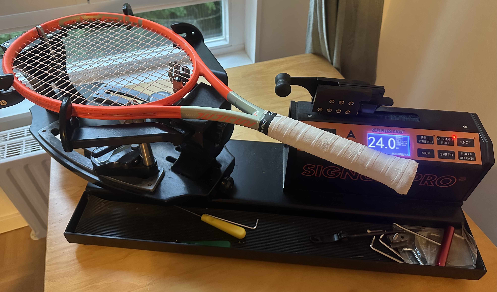

Dein Tennis-Bespannungsservice im Münchner Norden
Du suchst eine schnelle, hochwertige und zuverlässige Besaitung für deinen Tennisschläger im Münchner Norden? Dann bist du bei MunichStrings genau richtig. Als langjährige Tennisspieler wissen wir, worauf es bei einer guten Bespannung ankommt. Wir bespannen unsere Schläger mit der professionellen Signum Pro S‑6700 Maschine – mit höchster Präzision und Liebe zum Detail.
Du findest uns in der Schopenhauerstraße, direkt zwischen Schwabing und Milbertshofen.
Zum Einsatz kommt die Signum Pro S‑6700 – eine hochwertige elektronische Bespannmaschine, die eine besonders präzise und gleichmäßige Bespannung ermöglicht. Die Zugkraft lässt sich in 0,1 kg-Schritten einstellen, was eine individuelle Anpassung an Spielstil und Material erlaubt.
| Leistung | Preis |
|---|---|
| Schlägerbesaitung (mit eigener Saite) | 20 € |
| Griffbandwechsel (Overgrip) inkl. Material | +2 € |
| Express-Service | +5 € |
Saitenverfügbarkeit: Falls du keine Saite mitgibst, können wir gegen einen Aufpreis eine Saite stellen. Bitte frage dies vorher an – wir haben rotierende bzw. unterschiedliche Saiten verfügbar, es ist jedoch leider nicht immer eine größere Auswahl vorhanden.
Dauer: Normalerweise dauert der Besaitungsservice 2 Tage. Der Express-Service passt sich an deine Bedürfnisse an und du bekommst den Schläger schnellstmöglich zurück. Da Schläger besaiten jedoch nicht unsere einzige Tätigkeit ist und wir nebenbei auch noch studieren, kann dieser Service leider nicht immer garantiert werden. Melde dich daher bitte vorher, ob deine Wunschzeit eine machbare Zeit für uns ist.
Alle Preise sind Endpreise. Gemäß § 19 UStG wird keine Umsatzsteuer erhoben.
Du möchtest einen Schläger bespannen lassen oder hast Fragen? Melde dich gerne!
Hier findest du uns: